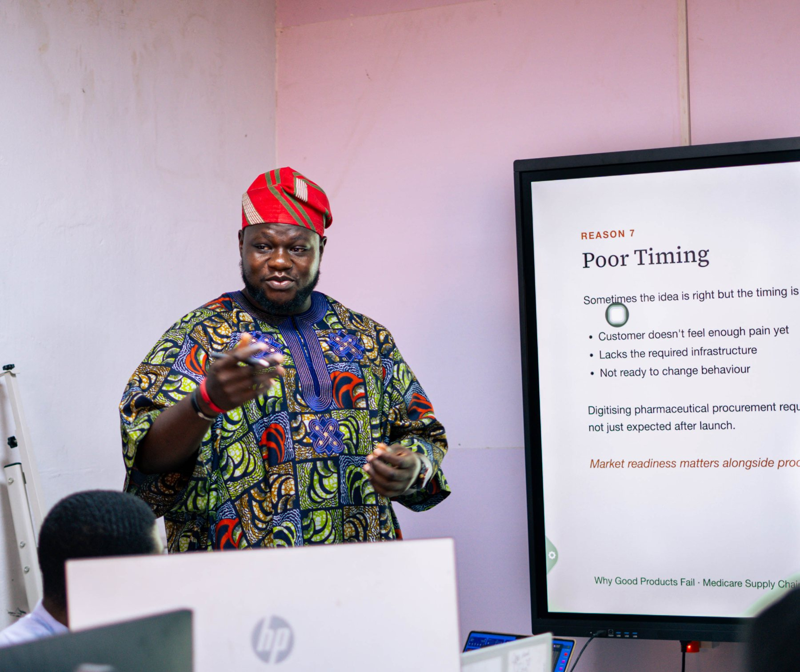
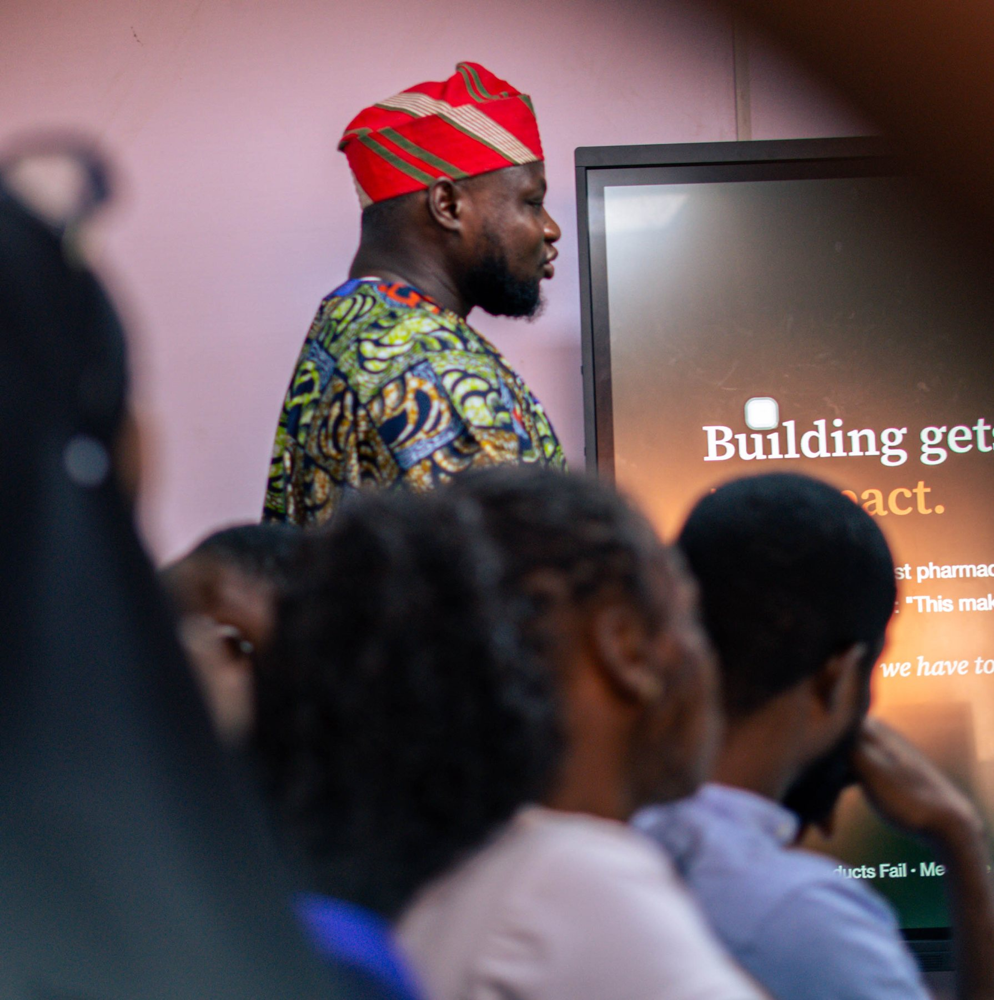
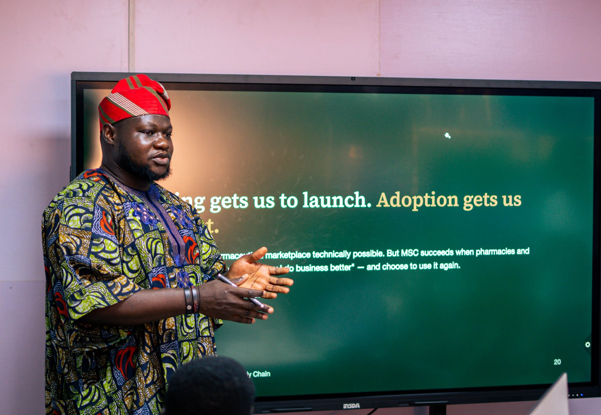

case study, now

pharmaceutical distribution connects suppliers, distributors and pharmacies. a marketplace for it needs more than listings and checkout. it means understanding buying habits, business relationships, product availability, operational constraints and the concerns that decide adoption.
i lead product marketing and support app operations for a b2b pharmaceutical e-commerce platform: understanding the market, informing product decisions, building the go to market strategy and getting the business ready for adoption.
four workstreams
led research with 100+ pharmacies on needs, workflows and adoption barriers. the findings shaped segmentation, requirements, priorities and launch planning.
working with product, engineering and operations to turn market feedback into product decisions on onboarding, inventory visibility, logistics and trust.
positioning, website messaging, customer education, onboarding, field activation and materials for commercial teams.
coordinating pharmacy onboarding, supplier workflows, retention planning and customer-facing processes.


100+
pharmacies researched to inform product and market decisions
lesson learnt
GO TO MARKET GETS STRONGER WHEN IT STARTS WITH WHAT CUSTOMERS ACTUALLY DO, NOT WHAT A BUSINESS ASSUMES THEY'LL DO.